The idea in a minute
A password manager keeps all your passwords in one encrypted file, the vault. You open it with a single password, the master password. Since you no longer have to remember the others, each one can be long, random and different.
- SecretBroker keeps the vault on your computer. There is no account to create and nothing is uploaded.
- A credential is the app's word for anything it keeps: a website login, an API key, a server login.
- If you don't use AI tools, ignore everything that mentions “the AI”. When the setup offers to connect one, choose Not now.
Install it
Get the installer for your system from the download section. SecretBroker runs on Windows 10 and 11 and on Ubuntu 22.04, 24.04 and 26.04. The macOS version is a preview.
Windows
- Download
SecretBroker-Setup-<version>.exe. Your browser may say the file is not commonly downloaded; choose to keep it. - Open the file. Today, Windows stops here with a blue window:
What Windows shows
Windows protected your PC
Microsoft Defender SmartScreen prevented an unrecognized app from starting. Running this app might put your PC at risk.
More info
Click More info. The window now names the file, says Publisher: Unknown publisher and shows a new button: click Run anyway.
- Windows asks whether to let the program make changes to your device, again with an unknown publisher. Answer Yes.
- The installer opens in the language of Windows. Follow it and finish with Open SecretBroker. It needs no internet connection.
Why it asks for administrator permission: the installer creates a hidden Windows account called SecretBroker, which cannot log in, and a folder only that account can read. That is what keeps your other programs away from the vault. The app goes into C:\Program Files\SecretBroker, starts with Windows and stays next to the clock.
Ubuntu
- Download
secretbroker_<version>_amd64.deb. - Double-click it and choose Install in the software installer. It asks for your password once. If double-clicking does not offer to install it, open a terminal in the download folder and run
sudo apt install ./secretbroker_*_amd64.deb. - Open SecretBroker from the app grid. Its icon next to the clock needs the AppIndicator extension, which Ubuntu enables by default.
The package does not come from Ubuntu's own repositories, so Ubuntu may remind you that it is third-party software. There is no apt repository yet: the app updates itself and asks for your password when it does.
macOS (preview)
- Download the package for your Mac:
…-macos-arm64.pkgfor Apple silicon (M1 and later) or…-macos-x86_64.pkgfor Intel. Apple menu › About This Mac says which you have. - Open it. macOS refuses and says the package cannot be verified, because it is not signed with an Apple Developer ID yet.
- Right-click (or Control-click) the file and choose Open. If that offers no way through, which is the case on recent versions of macOS, open System Settings › Privacy & Security, scroll down to Security and click Open Anyway.
- Follow the installer. It asks for an administrator's password.
Until the signed version exists you unlock with your Mac password or your master password once per session; after that, approvals are one click.
Updates and uninstalling
When there is a new version, the sidebar shows Update to <version>. Click it: the installer is downloaded from GitHub and only installed if it carries the project's signature. Your vault and settings are kept and the app reopens by itself. Settings › Updates › Check now looks for one at any time.
To uninstall on Windows, use “Installed apps”. The uninstaller asks whether to delete the vault too; unless you say yes, it is kept. On Ubuntu, removing the package keeps the vaults and purging it deletes them.
Create your vault
The first time you open SecretBroker it walks you through four short screens.
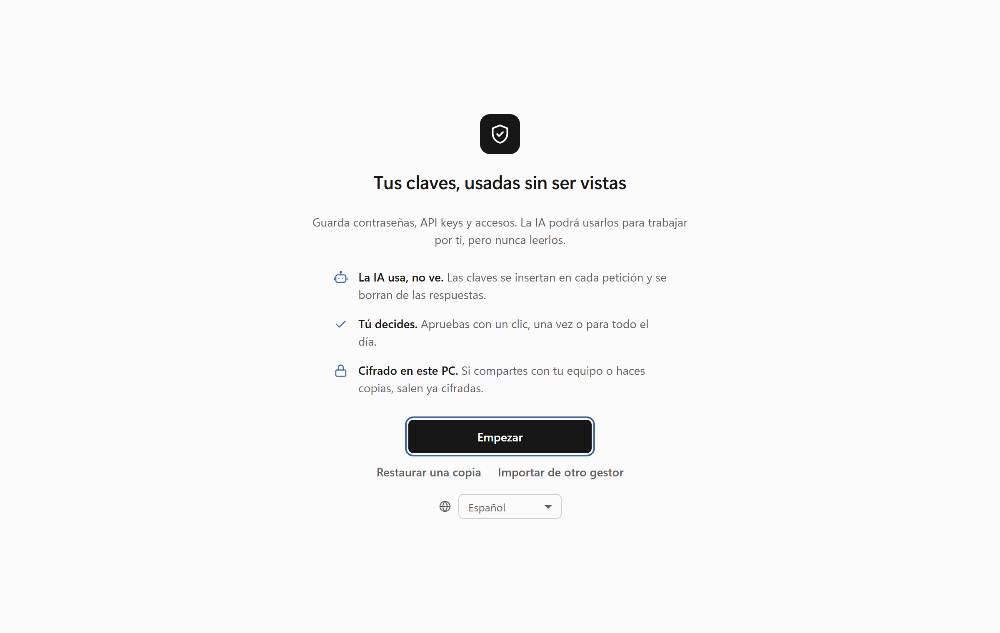
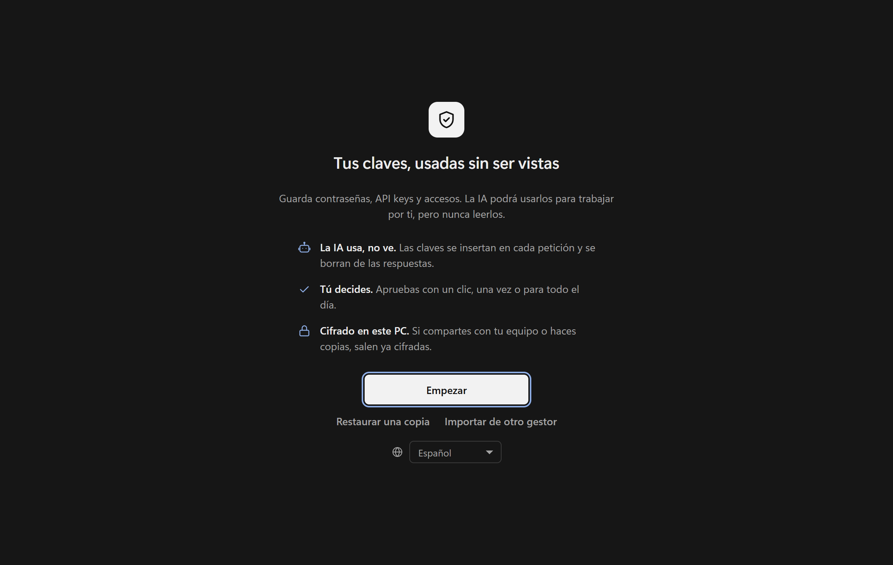
- On the first screen, click Get started. The language can be changed at the bottom. If you are coming from another computer, Restore a backup is here too.
- Choose a master password: type it twice (12 characters or more) and click Create vault. The next section helps you pick one.
- How do you want to open it each day? Pick one and click Continue:
- Windows Hello (PIN, fingerprint or face), if your PC has it. You are asked when you open the vault and when you view or copy a password.
- Open with my Windows session. The vault opens when you sign in to Windows and closes when you lock it. Convenient, with a cost the app states plainly: it protects you from the AI's mistakes, not from someone using your Windows session, because any program of yours could open it.
- Type the master password every time. The strictest, and the most tedious.
- Connect your AI is the last step. If you don't use AI tools, click Not now. If you do, see the developer guide.

Choose a good master password
It is the one password that protects all the others, and the only one nobody can reset for you from outside your PC.
- Make it long. The app asks for at least 12 characters. Four or five unrelated words make a phrase that is easy to remember and hard to guess.
- Use it nowhere else.
- Write it on paper and keep the paper at home. With Windows Hello or the Windows session you will type it so rarely that it is easy to forget, and you need it to restore a backup or move to another PC.
To change it later: Settings › Security › Master password › Change.
Add your first password
- In Credentials, click New (or press Ctrl+N) and choose Website or service.
- Fill in Name, Web address, Username or e-mail and Password. If you are creating the account right now, Generate writes a strong password for you.
- Click Save. The app may ask you to confirm it's you.
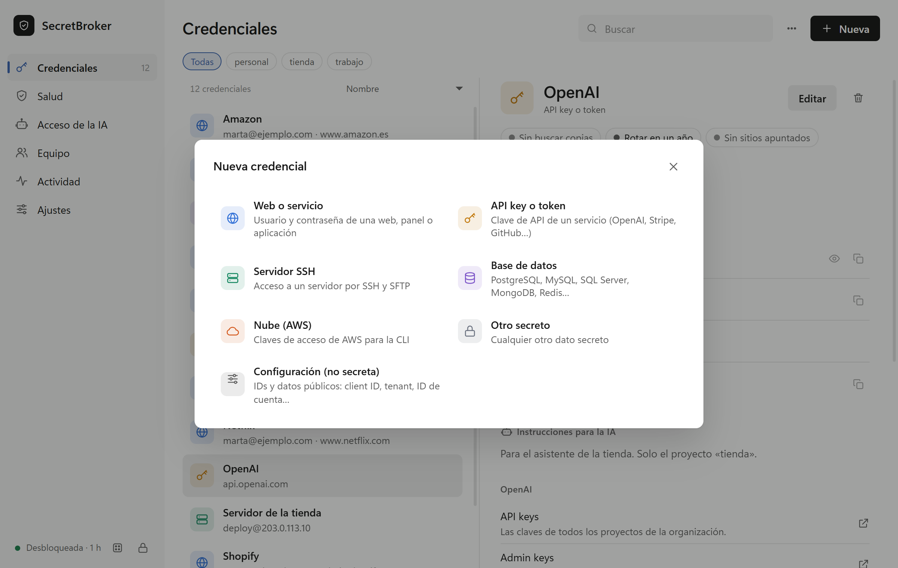
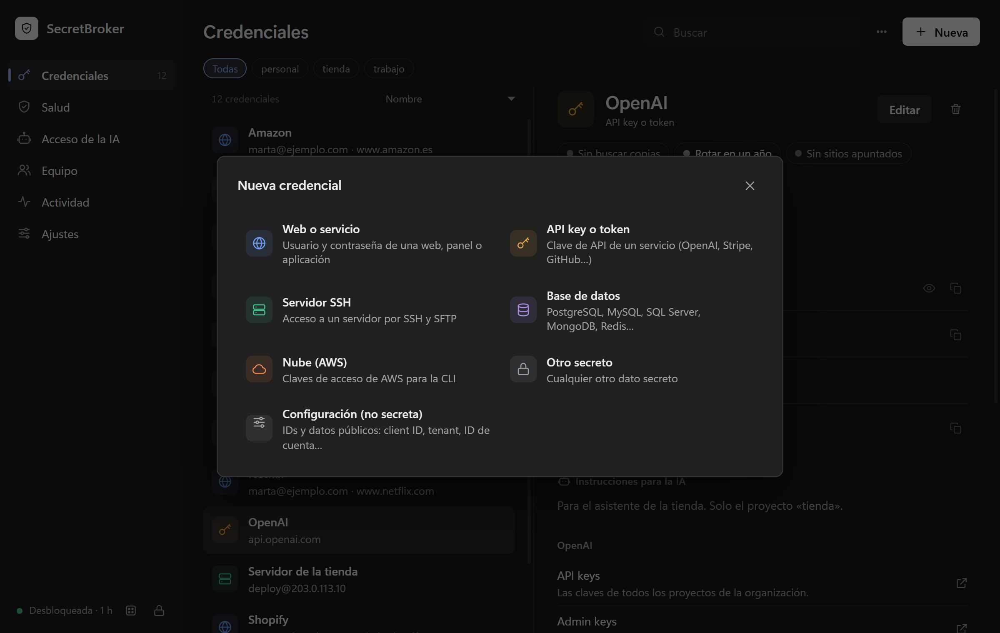
Your login is now in the list. The eye shows the password and the two squares copy it; the clipboard is cleared after 30 seconds. Tags group credentials, for example by project, and Ctrl+F searches.
The Password generator is also on its own, at the bottom of the sidebar or with Ctrl+G: a Random password of 12 to 128 characters, or a Passphrase of short words.
Import from a browser or another manager
SecretBroker reads exports from Chrome, Edge, Firefox, Bitwarden, 1Password, KeePass and KeePassXC. It never reads another program's data by itself: you export a file there and choose it here.
- Open the import: on an empty vault, Import from another manager; later, the ⋯ button next to New, or Settings › Import and export.
- Pick where you are coming from. The dialog tells you where the export is in that program. For example:
- Chrome: Settings → Autofill and passwords → Google Password Manager → Settings → Export passwords → Download file.
- Edge: Settings → Profiles → Passwords → … (More actions) → Export passwords.
- Bitwarden: export as
.json, not “.json (Encrypted)”. It brings folders, notes and 2FA codes;.csvworks too. - 1Password: export as CSV. The
.1puxformat cannot be read.
- Click Choose the file…. You see the list first, names only: the ones you already have are marked, and you tick what to bring. Then Import.
- When it finishes, the app reminds you that the exported file holds all your passwords unencrypted. Click Delete the file, and delete any copy left in Downloads, your e-mail or the cloud.

Folders become tags, and notes and extra fields go to Private notes. Afterwards, See health shows the weak or reused passwords you brought along.
Fill in passwords in your browser
The browser extension fills your username, password and 2FA code in Chrome, Edge, Brave and Firefox. It is not in the browser stores yet, so for now you load it from the app's folder. It takes two minutes and no terminal.
- In the app, open Settings › Browser and click Install the extension. Choose your browser at the top of the dialog.
- Chrome, Edge, Brave: click Open Chrome extensions (or your browser's name), turn on Developer mode, click Load unpacked and choose the SecretBroker extension folder. The dialog shows the folder, with Copy path and Show.
Firefox: click Open Firefox, then Load Temporary Add-on… and choose the
manifest.jsonfile in that folder. In the extensions button of the toolbar, allow SecretBroker to access all websites. - Pin the SecretBroker icon to the toolbar, open it and click Connect. The app asks Connect Chrome? and shows a six-digit code: check that the extension shows the same code and click Connect. If you did not just click Connect in the browser, choose Reject.
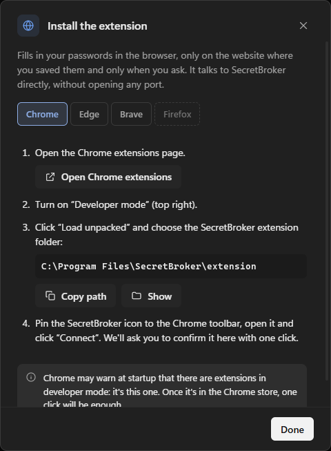

From then on, on a login page, click the SecretBroker button inside the field or press Alt+Shift+L. Ctrl+Shift+Y opens the extension. It also offers to save new logins and changed passwords.
- A login is only offered on the website it was saved for. A look-alike address, the usual trick of phishing e-mails, gets nothing.
- Nothing is filled until you ask.
- Chrome, Edge and Brave may warn at startup about extensions in developer mode: it is this one. Firefox forgets a temporary add-on when it closes, so until the extension is on addons.mozilla.org you load it again each time.
Two-step codes (2FA)
Many websites offer two-step verification with an “authenticator app”: besides the password you type a six-digit code that changes every 30 seconds. SecretBroker can be that app.
- On the website, turn on two-step verification and choose the authenticator app option. The site shows a QR code and, below it or behind a link such as “can't scan it?”, a key written in letters and numbers.
- Copy that key. In SecretBroker, open the login, click Edit and paste it into 2FA code (TOTP). Click Save.
- The login now shows the current code, with Show the code and Copy the code. Type it into the website to finish turning it on.
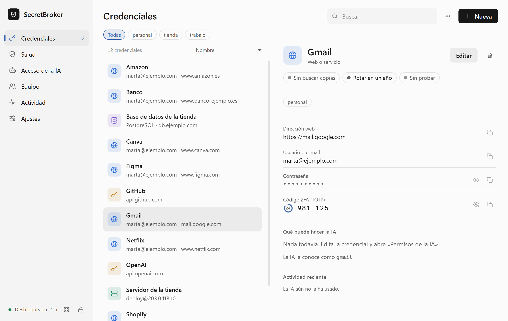
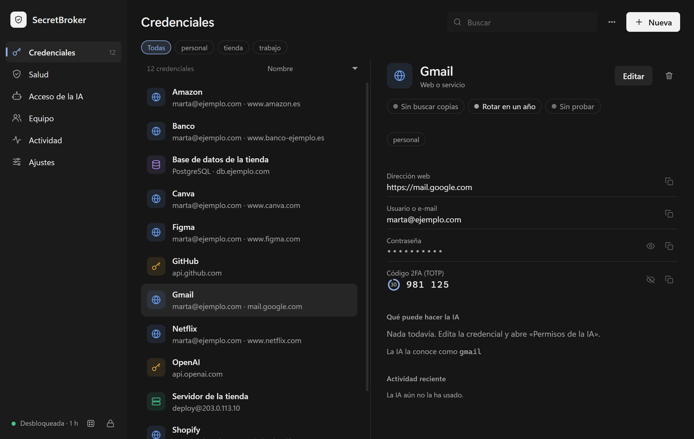
Keep the recovery codes the website gives you in the login's Private notes. One thing to weigh: a vault that holds both the password and the code holds both steps. For the few accounts that matter most, you may prefer to keep the code on your phone.
Backups, restoring and moving to another PC
Your vault exists only on your computer. Without a backup, a broken disk takes every password with it.
Turn on the daily backup
Open Settings › Backup copy and click Turn on next to Automatic daily backup. Each day the encrypted vault is copied to a folder: OneDrive if you have it, so the copy is outside the PC, otherwise Documents. Change folder picks another, such as a USB drive. The last 10 copies are kept, and Back up now makes one at once.
Restore a backup
Settings › Backup copy › Restore… replaces the vault with a backup. You need the master password the vault had when that copy was made. The current vault is kept aside, just in case.
Move to another PC
Settings › Changing PCs › Move to another PC › See the steps guides you:
- Save a backup… writes your vault to an encrypted file. Take it on a USB drive or leave it in a cloud folder.
- On the new PC, install SecretBroker. On the first screen choose Restore a backup, open that file and type your master password.
- When everything works, uninstall SecretBroker from the old PC if you will not use it again.
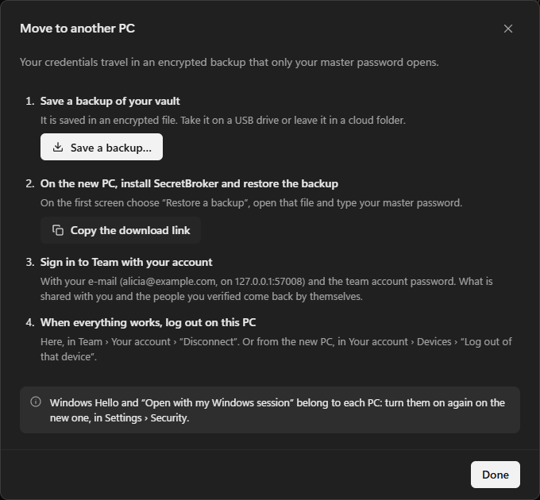
Windows Hello and “Open with my Windows session” belong to each PC: turn them on again on the new one, in Settings › Security.
Export, which is something else
Settings › Import and export › Export… writes your credentials to a file for another tool: Encrypted, with a password you choose, or Unencrypted (CSV) or (JSON), which Bitwarden, 1Password, KeePassXC and browsers can read. An unencrypted export has every password in plain view: import it straight away and delete it.
If you forget the master password
What you can do depends on where your vault is.
On the computer where the vault lives
- On the lock screen, click Forgot your master password?
- The Recover access dialog lets you sign in with Windows Hello or your Windows password (on Ubuntu and macOS, your system password).
- Once in, the app asks you to choose a new master password.
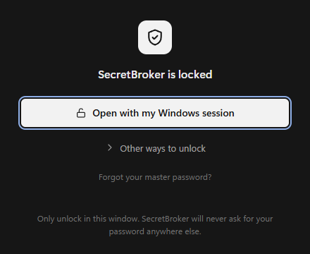
If the vault is already open, Settings › Security › Master password › Change does the same after confirming with Windows.
This only works on that PC, and it has a consequence worth knowing: on that PC your vault is as safe as your Windows sign-in. Use a good Windows password or PIN.
From a backup, or on another computer
A backup can only be opened with the master password the vault had when the copy was made. If the computer is lost or broken and you do not remember that password, nobody can open the backup: not you, and not the project, which never has your vault or your password. That is why the paper copy matters.
Locking and unlocking
- Lock now: Ctrl+L, the padlock at the bottom of the sidebar, or Lock in the menu of the icon next to the clock.
- Automatic lock (Settings › Security): after 15 minutes, 30 minutes, 1 hour or 4 hours without use, or never.
- Windows Hello (Settings › Security): Turn on to unlock and show passwords with your PIN, fingerprint or face. Ubuntu has no equivalent; on a Mac, Touch ID will arrive with the signed version.
- Open with my Windows session (Settings › Security): the vault follows your Windows session. Remember what it means: anyone, or any program, using your unlocked session can open it.
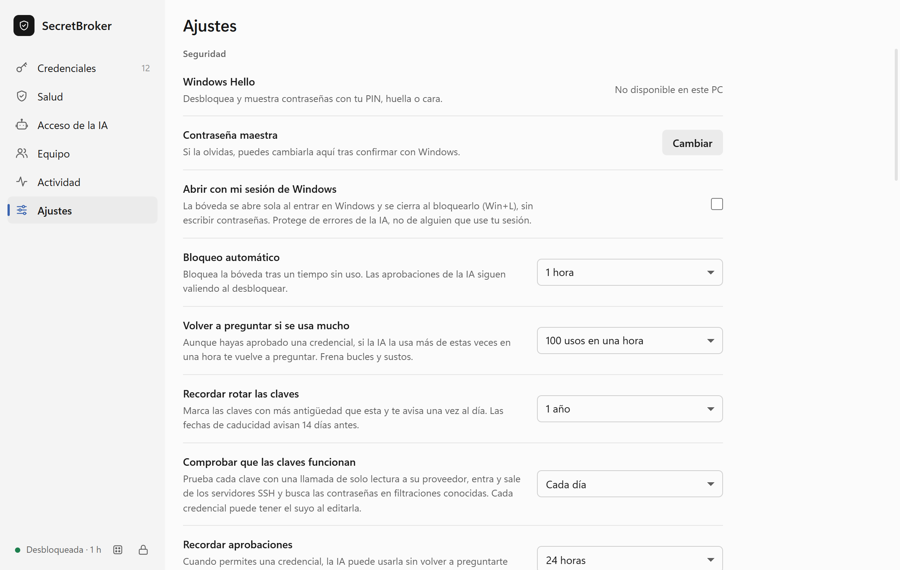
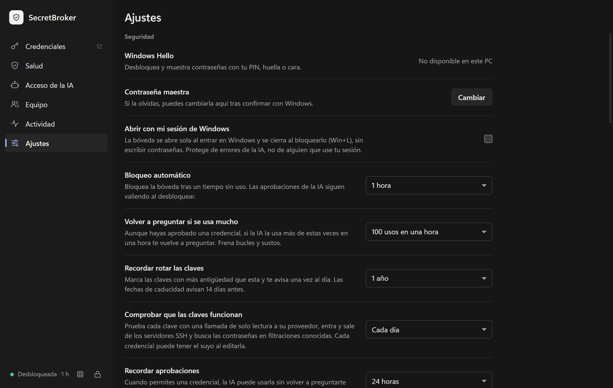
Closing the window does not quit SecretBroker: it stays next to the clock, where Open SecretBroker, Lock and Quit are. Settings › App › Start with Windows decides whether it starts by itself.
Check your passwords' health
Health, in the sidebar, gives a score from 0 to 100 and lists what to fix first: passwords that are weak, reused in several places, old, expired or found in known leaks. Check now refreshes it.
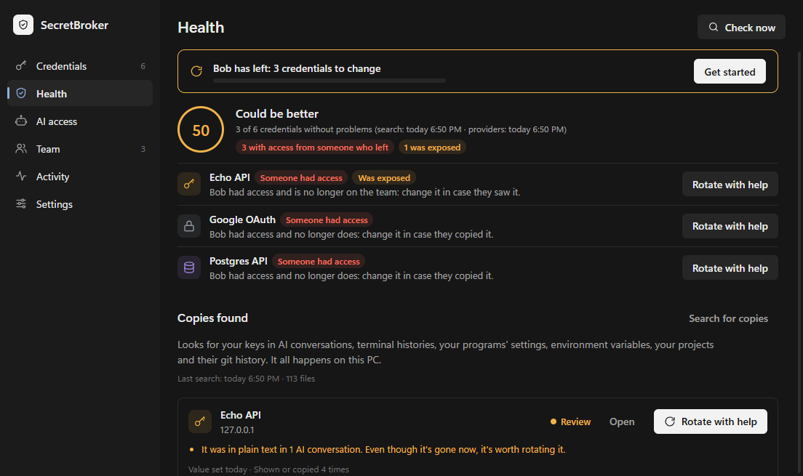
Each line has Rotate with help: the app generates a new password, copies it for you to paste into the website's “change password” page, and saves it once you confirm the site accepted it.
To know whether a password is in a known leak, the app asks the Have I Been Pwned service in a way that does not reveal it: only the first five characters of a scrambled fingerprint of the password leave your PC. The privacy page has the details.
When something goes wrong
“Can't connect to the service”
The SecretBroker service starts with your computer. If you have just installed it, wait a few seconds or restart the PC.
I closed the window and can't find the app
It is still running next to the clock. Click its icon and choose Open SecretBroker. On Ubuntu the icon needs the AppIndicator extension.
The extension does not offer my login
- Is the vault unlocked? The extension can only fill while it is.
- Settings › Browser should say the browser is Connected. If not, open the extension and click Connect again. Firefox needs the add-on loaded again after each restart.
- The login may be saved under another address. Edit it and check Web address; Other addresses adds more sites for the same account.
The import does not recognise my file
Export again as CSV or, from Bitwarden, as unencrypted .json. Encrypted Bitwarden exports and 1Password's .1pux cannot be read.
An update will not install
Download the current installer from this site and run it over the one you have. Your vault and settings are kept.
Getting help
- Questions and bugs: open an issue on GitHub. Issues are public: never paste a password or a key, and check screenshots before attaching them. Say which version you have; it is at the bottom of Settings.
- Security problems: please do not open a public issue. Report it in private from the repository's Security tab, Report a vulnerability. The security policy says what to include and when to expect an answer.
Last updated: November 18, 2026